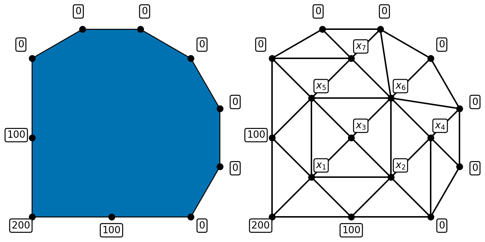
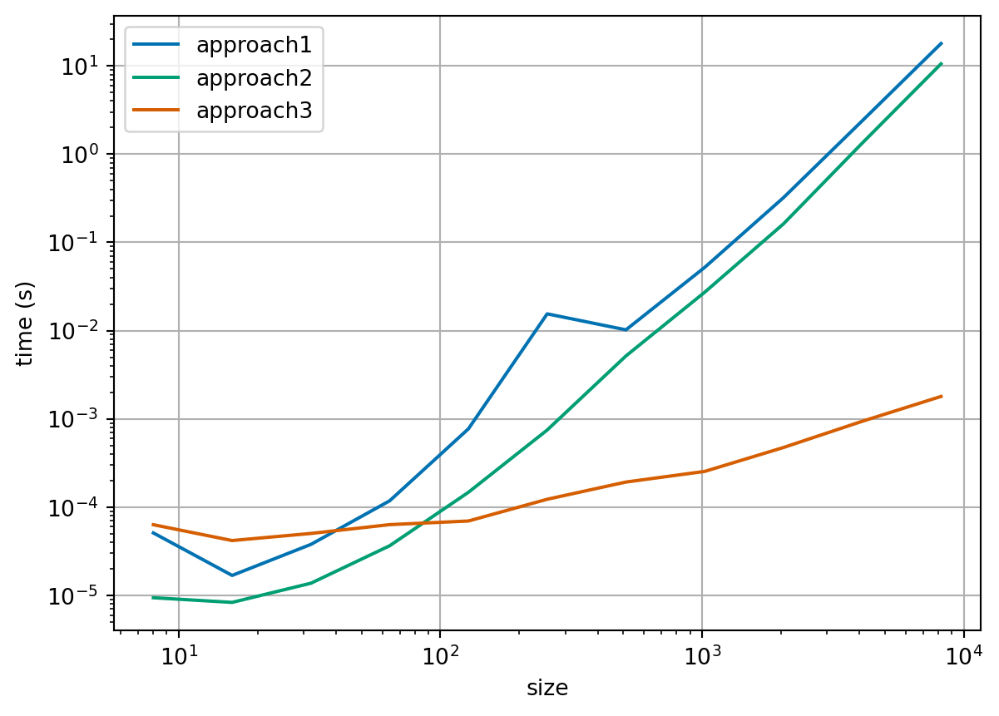
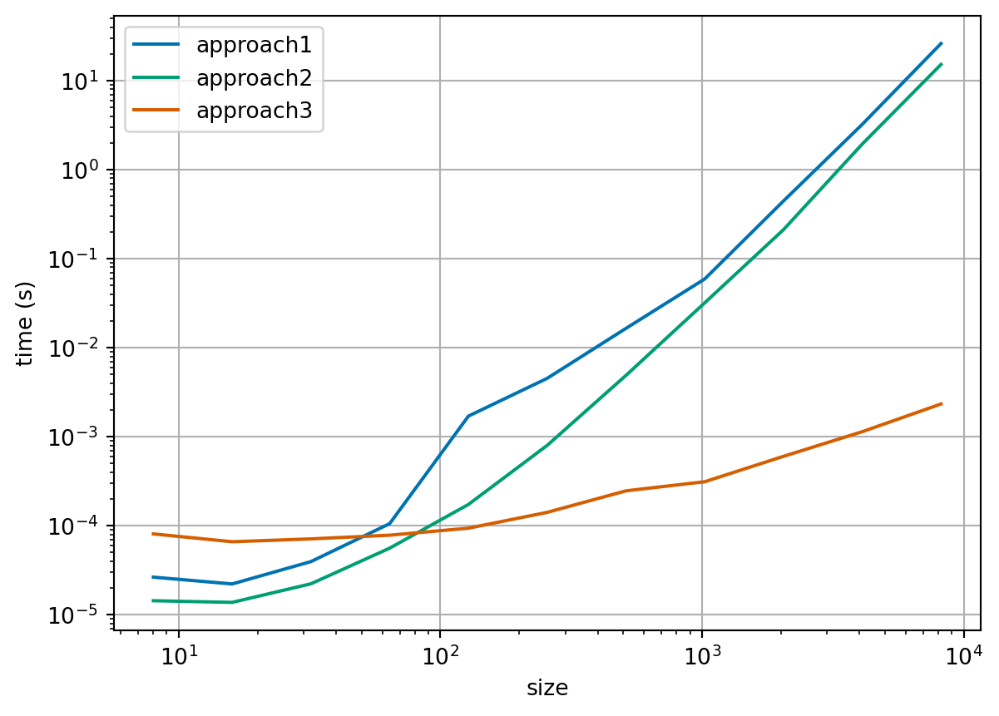
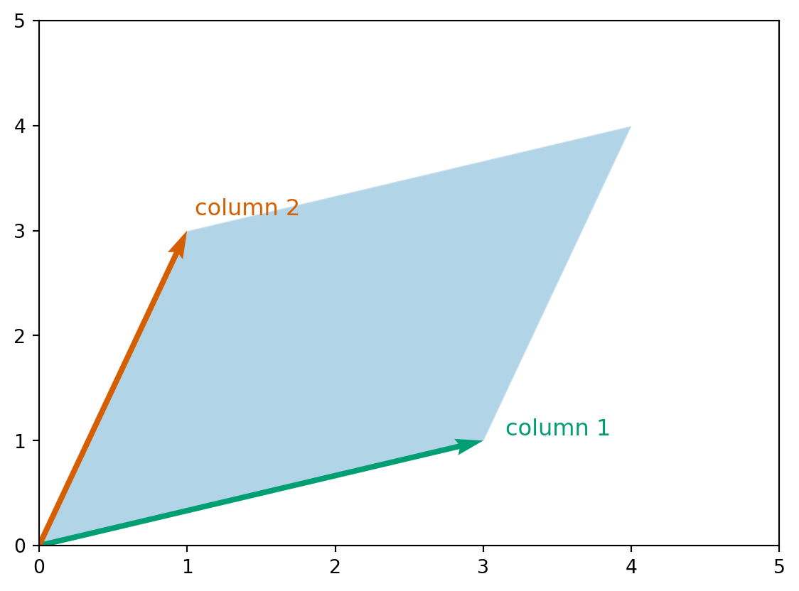
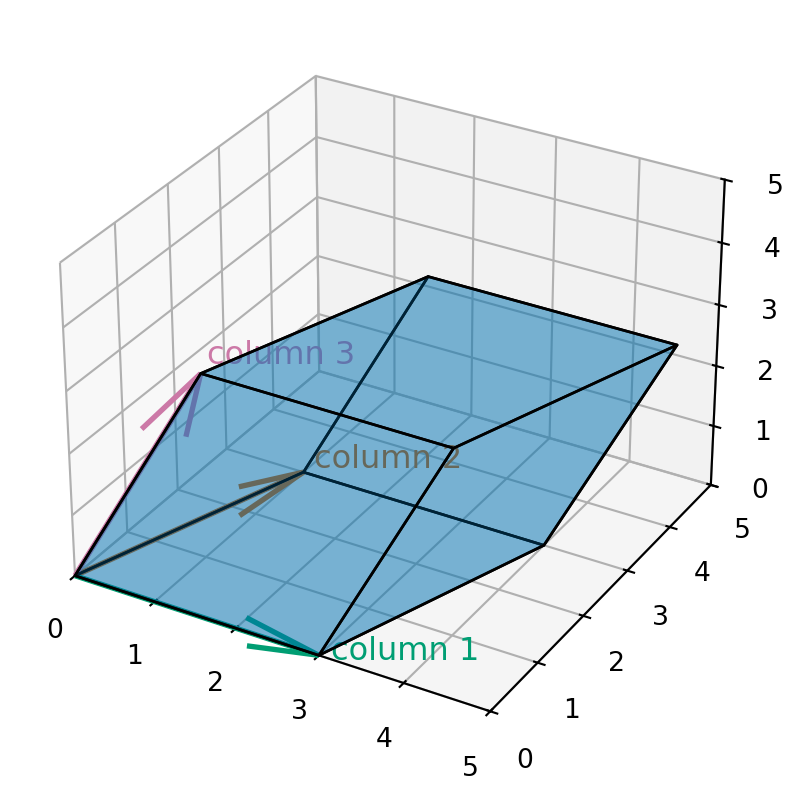

3 Introduction to systems of linear equations
3.1 Systems of linear equations
Given an \(n \times n\) matrix \(A\) and an \(n\)-vector \(\vec{b}\), find the \(n\)-vector \(\vec{x}\) which satisfies: \[\begin{equation} \label{eq:sle} A \vec{x} = \vec{b}. \end{equation}\]
We can also write \(\eqref{eq:sle}\) as a system of linear equations: \[\begin{align*} \text{Equation 1:} && a_{11} x_1 + a_{12} x_2 + a_{13} x_3 + \cdots + a_{1n} x_n & = b_1 \\ \text{Equation 2:} && a_{21} x_1 + a_{22} x_2 + a_{23} x_3 + \cdots + a_{2n} x_n & = b_2 \\ \vdots \\ \text{Equation i:} && a_{i1} x_1 + a_{i2} x_2 + a_{i3} x_3 + \cdots + a_{in} x_n & = b_i \\ \vdots \\ \text{Equation n:} && a_{n1} x_1 + a_{n2} x_2 + a_{n3} x_3 + \cdots + a_{nn} x_n & = b_n. \end{align*}\]
Notes:
The values \(a_{ij}\) are known as coefficients.
The right-hand side values \(b_i\) are known and are given to you as part of the problem.
\(x_1, x_2, x_3, \ldots, x_n\) are not known and are what you need to find to solve the problem.
Many computational algorithms require the solution of linear equations, e.g. in fields such as
- scientific computation;
- network design and optimisation;
- graphics and visualisation;
- machine learning.
Typically, these systems are very large, with millions or billions of unknowns in some scientific and engineering applications.
It is therefore important that this problem can be solved
- accurately: we are allowed to make small errors but not big errors;
- efficiently: we need to find the answer quickly;
- reliably: we need to know that our algorithm will give us an answer that we are happy with.
In this part of the module we will consider square systems of equations for which the number of equations is equal to the number of unknowns. In this case the following statements are equivalent:
- The linear system \(A \vec{x} = \vec{b}\) has a unique solution, for any right-hand side vector \(\vec{b}\).
- There exists a matrix (let’s call it \(A^{-1}\) the inverse of \(A\)) such that \(A^{-1} A = I_n\), and we say that the matrix \(A\) is invertible.
- The matrix \(A\) is non-singular.
We will see further statements also equivalent to these later in this section of the module.
Example 3.1 (Temperature in a sealed room) Suppose we wish to estimate the temperature distribution inside an object:
We can place a network of points inside the object and use the following model: the temperature at each interior point is the average of its neighbours.
This example leads to the system:
\[ \begin{pmatrix} 1 & -1/6 & -1/6 & 0 & -1/6 & 0 & 0 \\ -1/6 & 1 & -1/6 & -1/6 & 0 & -1/6 & 0 \\ -1/4 & -1/4 & 1 & 0 & -1/4 & -1/4 & 0 \\ 0 & -1/5 & 0 & 1 & 0 & -1/5 & 0 \\ -1/6 & 0 & -1/6 & 0 & 1 & -1/6 & -1/6 \\ 0 & -1/8 & -1/8 & -1/8 & -1/8 & 1 & -1/8 \\ 0 & 0 & 0 & 0 & -1/5 & -1/5 & 1 \end{pmatrix} \begin{pmatrix} x_1 \\ x_2 \\ x_3 \\ x_4 \\ x_5 \\ x_6 \\ x_7 \end{pmatrix} = \begin{pmatrix} 400/6 \\ 100/6 \\ 0 \\ 0 \\ 100/6 \\ 0 \\ 0 \end{pmatrix}. \]
Example 3.2 (Traffic network) Suppose we wish to monitor the flow of traffic in a city centre:

As the above example shows, it is not necessary to monitor every single road. If we know all of the \(y\) values, we can calculate the \(x\) values!
This example leads to the system:
\[ \begin{pmatrix} 1 & 0 & 1 & 0 & 0 & 0 & 0 & 0 \\ 1 & -1 & 0 & 0 & 0 & 0 & 0 & 0 \\ 0 & 1 & 0 & -1 & 0 & 0 & 0 & 0 \\ 0 & 0 & 1 & 0 & 0 & -1 & 0 & 0 \\ 0 & 0 & 0 & 0 & 1 & 0 & 1 & 0 \\ 0 & 0 & 0 & 1 & 1 & 0 & 0 & 0 \\ 0 & 0 & 0 & 0 & 0 & 1 & 0 & -1 \\ 0 & 0 & 0 & 0 & 0 & 0 & 1 & 1 \end{pmatrix} \begin{pmatrix} x_1 \\ x_2 \\ x_3 \\ x_4 \\ x_5 \\ x_6 \\ x_7 \\ x_8 \end{pmatrix} = \begin{pmatrix} y_5 \\ y_{12} - y_6 \\ y_8 - y_7 \\ y_{11} - y_4 \\ y_{11} + y_{12} - y_{10} \\ y_9 \\ y_2 - y_3 \\ y_1 \end{pmatrix}. \]
3.2 Matrix inverse
One way to solve a system of linear equations is to compute the inverse of \(A\), \(A^{-1}\), directly, then the solution can be obtained through matrix multiplication: \(\vec{x} = A^{-1} \vec{b}\).
In two dimensions this is a simple procedure. Denote by \[ A = \begin{pmatrix} a & b \\ c & d \end{pmatrix}, \] then \[ A^{-1} = \frac{1}{ad - bc} \begin{pmatrix} d & -b \\ -c & a \end{pmatrix}. \] Indeed, we see that \[\begin{align*} A^{-1} A & = \frac{1}{ad - bc} \begin{pmatrix} d & -b \\ -c & a \end{pmatrix} \begin{pmatrix} a & b \\ c & d \end{pmatrix} \\ & = \frac{1}{ad - bc} \begin{pmatrix} da - bc & db - bd \\ -ca + ac & -bc + ad \end{pmatrix} \\ & = \begin{pmatrix} 1 & 0 \\ 0 & 1 \end{pmatrix}. \end{align*}\]
Example 3.3 The inverse of the matrix \[\begin{pmatrix} 3 & 1 \\ 1 & 3 \end{pmatrix}\] is \[ \frac{1}{3\times 3-1\times 1} \begin{pmatrix} 3 & -1 \\ -1 & 3 \end{pmatrix} = \begin{pmatrix} \frac{3}{8} & -\frac{1}{8} \\ -\frac{1}{8} & \frac{3}{8} \end{pmatrix}. \]
There are general formulae for computing larger matrix inverses but it turns out using these to solve systems of linear equations is a bad idea! Here we compare two simple and one more specialised implementations:
def approach1(A, b):
"""
Solve the system of linear equations Ax = b by applying the inverse of A
"""
A_inv = np.linalg.inv(A)
x = A_inv @ b
return x
def approach2(A, b):
"""
Solve the system of linear equations Ax = b through numpy's linear solver
"""
x = np.linalg.solve(A, b)
return x
def approach3(A_sparse, b):
"""
Solve the system of linear equations Ax = b through scipy's sparse linear
solver
"""
x = sp.sparse.linalg.spsolve(A_sparse, b)
return x
We see that using np.linalg.solve to actually solve the equation instead of computing the inverse and then applying the inverse is always faster for the problems considered here. We also see that the specialised solver can do much better than either approach here.
3.3 The determinant
One easy way to test if a matrix is invertible (or that a system of linear equations has a unique solution) is to use the determinant. The determinant of a matrix \(A\) can be interpreted geometrically as the signed area, volume, or hypervolume of the parallelogram, parallelepiped, or higher-dimensional analogue generated by the columns of \(A\).
Example 3.4 For \(A\) given by \[ A = \begin{pmatrix} 3 & 1 \\ 1 & 3 \end{pmatrix} \] the shape is a parallelogram that looks like this:

For \(A\) given by \[ A = \begin{pmatrix} 3 & 1 & 1\\ 0 & 3 & 1 \\ 0 & 0 & 3 \end{pmatrix}, \] the shape is a parallelepiped given that looks like this:

If we are given an \(n \times n\) matrix \(A\), it is invertible if, and only if, the area/volume/hypervolume of the associated parallelogram/parallelepiped is nonzero. The quantity measuring the signed area, volume, or hypervolume of the associated parallelepiped is called the determinant of \(A\), denoted \(\det A\):
Definition 3.1 Let \(A\) be a square \(n \times n\) matrix.
If \(n = 2\), \[\begin{equation} \det A = \det \begin{pmatrix} a_{11} & a_{12} \\ a_{21} & a_{22} \end{pmatrix} = a_{11} a_{22} - a_{21} a_{12}. \end{equation}\]
If \(n = 3\), \[\begin{align*} \det A & = \det \begin{pmatrix} a_{11} & a_{12} & a_{13} \\ a_{21} & a_{22} & a_{23} \\ a_{31} & a_{32} & a_{33} \end{pmatrix} \\ & = a_{11} (a_{22} a_{33} - a_{23} a_{32}) - a_{12} (a_{21} a_{33} - a_{23} a_{31}) + a_{13} (a_{21} a_{32} - a_{22} a_{31}). \end{align*}\]
For general \(n\), the determinant can be found by, for example, Laplace expansions \[ \det A = \sum_{j=1}^n (-1)^{j+1} a_{1,j} M_{1,j}, \] where \(a_{1,j}\) is the entry of the first row and \(j\)th column of \(A\) and \(M_{1,j}\) is the the determinant of the submatrix obtained by removing the first row and the \(j\)th column from \(A\).
Example 3.5
Let \(A\) be given by \[ A = \begin{pmatrix} 3 & 1 \\ 1 & 3 \end{pmatrix}. \] Then we can compute that \[ \det A = 3 \times 3 - 1 \times 1 = 9 - 1 = 8. \]
Let \(A\) be given by \[ A = \begin{pmatrix} 3 & 1 & 1\\ 0 & 3 & 1 \\ 0 & 0 & 3 \end{pmatrix}. \] Then we can compute that \[\begin{align*} \det A & = 3 \times (3 \times 3 - 0 \times 1) - 1 \times (0 \times 3 - 0 \times 1) + 1 \times (0 \times 0 - 3 \times 0) \\ & = 3 \times 9 - 1 \times 0 + 1 \times 0 = 27. \end{align*}\]
Exercise 3.1 Compute the determinant of \[ \begin{pmatrix} 2 & -1 & 3 \\ 3 & 2 & -4 \\ 5 & 1 & 1 \end{pmatrix}. \]
This gives us an additional criterion to determine if our systems have a unique solution: A square matrix \(A\) is invertible if and only if \[ \det A \neq 0. \]
We have been inaccurate in what we have said before. Strictly speaking the determinant we have defined here is the signed area/volume/hypervolume of the associated parallelepiped, and we can recover the actual volume by taking \(| \det A |\).
We do have the following rule for manipulating determinants too:
- Let \(A, B\) be square \(n \times n\)-matrices then \(\det (AB) = \det A \det B\).
- Let \(A\) be a square \(n \times n\)-matrix and \(c\) a real number then \(\det (cA) = c^n \det A\).
- Let \(A\) be an invertible square matrix, then \(\det (A^{-1}) = \frac{1}{\det A}\).
Exercise 3.2 Prove these three rules for manipulating determinants for \(2 \times 2\) matrices by direct calculation.
3.4 Special types of matrices
The general matrix \(A\) before the examples is known as a full matrix: any of its components \(a_{ij}\) might be nonzero.
Almost always, the problem being solved leads to a matrix with a particular structure of entries: Some entries may be known to be zero. If this is the case then it is often possible to use this knowledge to improve the efficiency of the algorithm (in terms of both speed and/or storage).
Example 3.6 (Triangular matrix) One common (and important) structure takes the form
\[ A = \begin{pmatrix} a_{11} & 0 & 0 & \cdots & 0 \\ a_{21} & a_{22} & 0 & \cdots & 0 \\ a_{31} & a_{32} & a_{33} & \cdots & 0 \\ \vdots & \vdots & \vdots & \ddots & \vdots \\ a_{n1} & a_{n2} & a_{n3} & \cdots & a_{nn} \end{pmatrix}. \]
A is a lower triangular matrix. Every entry above the leading diagonal is zero:
\[ a_{ij} = 0 \quad \text{ for } \quad j > i. \]
The transpose of this matrix is an upper triangular matrix and can be treated in a very similar manner.
Note that the determinant of a triangular matrix is simply the product of diagonal coefficients: \[ \det A = a_{11} a_{22} \cdots a_{nn} = \prod_{i=1}^n a_{ii}. \]
Example 3.7 (Sparse matrices) Sparse matrices are prevalent in any application which relies on some form of graph structure (see both the temperature, Example 3.1, and traffic network examples, Example 3.2).
The \(a_{ij}\) typically represents some form of “communication” between vertices \(i\) and \(j\) of the graph, so the element is only nonzero if the vertices are connected.
There is no generic pattern for these entries, though there is usually one that is specific to the problem solved.
Usually, \(a_{ii} \neq 0\) - the diagonal is nonzero.
A “large” portion of the matrix is zero.
- A full \(n \times n\) matrix may have \(n^2\) nonzero entries.
- A sparse \(n \times n\) has \(\alpha n\) nonzero entries, where \(\alpha \ll n\).
Many special techniques exist for handling sparse matrices, some of which can be used automatically within Python (
scipy.sparsedocumentation)
What is the significance of these special examples?
In the next section we will discuss a general numerical algorithm for the solution of linear systems of equations.
This will involve reducing the problem to one involving a triangular matrix, which, as we show below, is relatively easy to solve.
In subsequent lectures, we will see that, for sparse matrix systems, alternative solution techniques are available.
3.5 Summary
- We have introduced the terminology for systems of linear equations and given some application areas where examples may arise.
- We have seen that we can solve simple systems of linear equations using the matrix inverse but this is not advised for larger systems.
- Finally, we have introduced the determinant as a way of checking that systems of linear equations have a unique solution.
3.6 Further reading
- Gregory Gundersen Why shouldn’t I invert that matrix?, 2020.